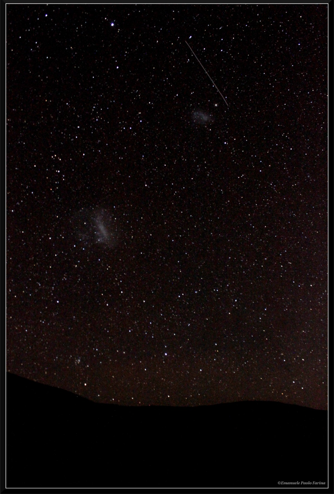

Home
CV
Research
Multiple quasar systems
The CGM of quasars
The hunt for high-
z
quasars
The
REQUIEM
survey
The
Aether
survey
Publications
First Author
All
ORCID
Contact me
Photos
Contact Information

Gemini Observatory Northern Operations Center
670 N. A'ohoku Place
Hilo, HI 96720
USA
emanuele.paolo.farina 'at' gmail.com
https://emastro.github.io/